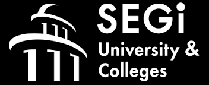
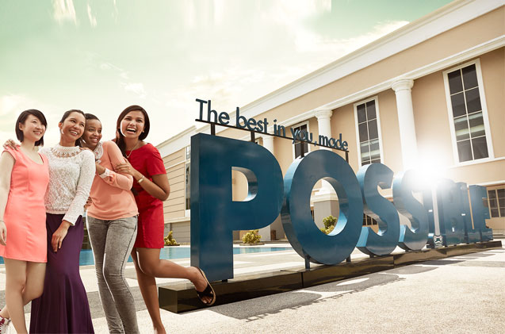

Our University & Colleges
-
SEGi University and Colleges first opened its doors as Systematic College in 1977 in the heart of Kuala Lumpur’s
commercial district, offering globally recognised professional qualifications. Since then, SEGi has experienced significant
growth by adapting and catering to an increasing demand for tertiary education and professional qualifications in Malaysia.
Known as one of the largest private higher education providers in Malaysia, SEGi now serves 25,000 students in five major
campuses located in Kota Damansara, Kuala Lumpur, Subang Jaya, Penang and Sarawak.
Today, the significance of climbing the career ladder in the industry is highly competitive, therefore SEGi now offers a new breakthrough method known as PACE or Professional and Continuing Education. SEGi PACE enables working adults to upgrade their qualification level whilst accommodating their work schedule, hence fulfilling work-life balance.

Vision & Mission
| Vision | Mission |
|---|---|
| SEGi will place quality education within the reach of willing minds and natural talents | To be the premier regional higher education provider offering quality employability-based international programmes on accessible terms, delivered through the most innovative technologies and student-centric learning techniques |

Developing hidden gems of tomorrow
-
With our belief to make quality education accessible, we’re committed to provide excellent education for eager minds
and natural talents to maximise your unique potentials.
If you aspire to redefine the benchmarks of excellence in your field, we’d like to embrace that passion with you. Together, we can build mutual trust – what we hold dearly for every SEGian. We enable promising minds with a holistic learning experience and constantly rediscover new ways to make a difference in your lives.
Our unique attributes of quality, passion, vibrancy and care are the key and guiding principles that pave the way for your growth and ours alike.
With nearly 4 decades of maturity, we’ve now carved our brand promise that is ‘The Best in You, Made Possible’. Are you ready to embark on this journey to make a difference together?
One of nation’s largest private higher education providers
-
We are proud to host some of the best graduates from diverse backgrounds with concrete foundations for nearly 40 years.
The by-products of our coaching have since become leaders of industries.
In 1977, SEGi University Group (SEGi) was then known as Systematic College. Since then, we have been meeting the increasing demand for high academic and professional qualifications – resulting in a string of success in the academic field.
Today, the Group boasts an impressive number of young learners; as many as 25,000, in five major campuses located in the Klang Valley, Penang and Sarawak.